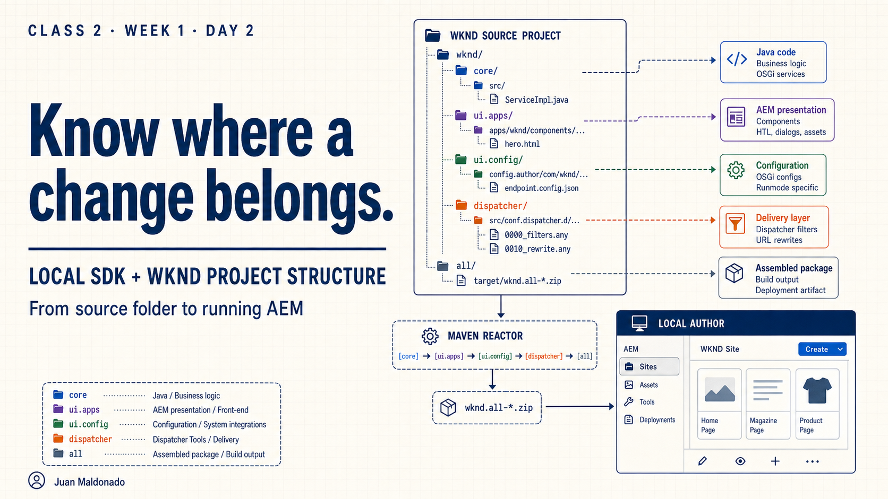
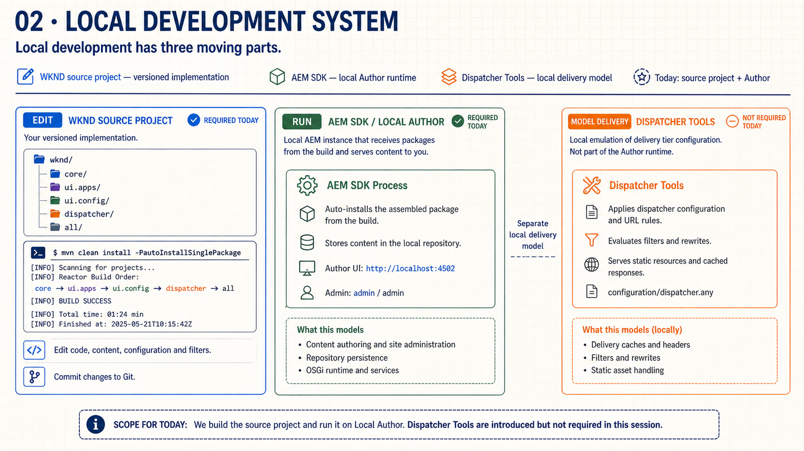
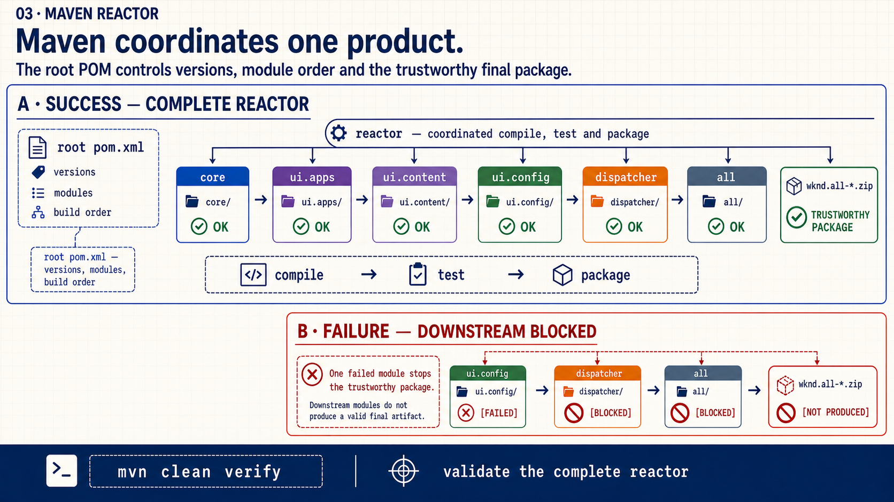
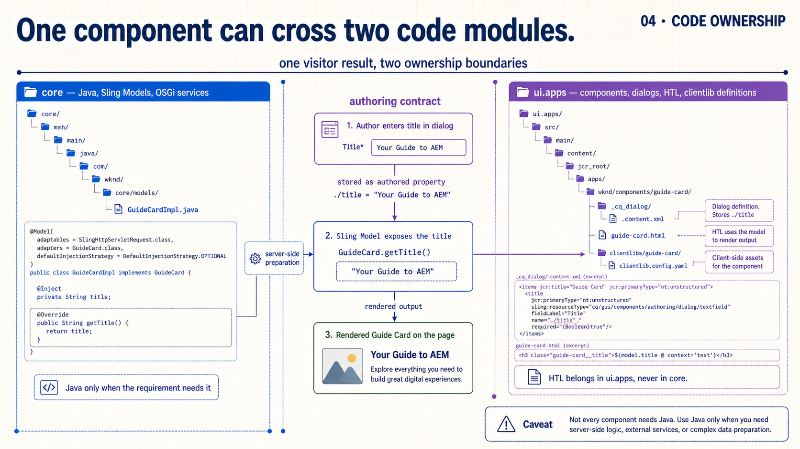
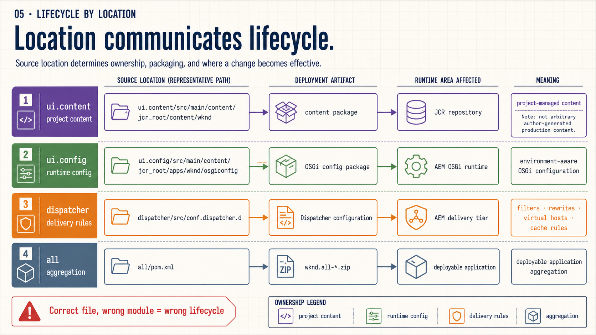
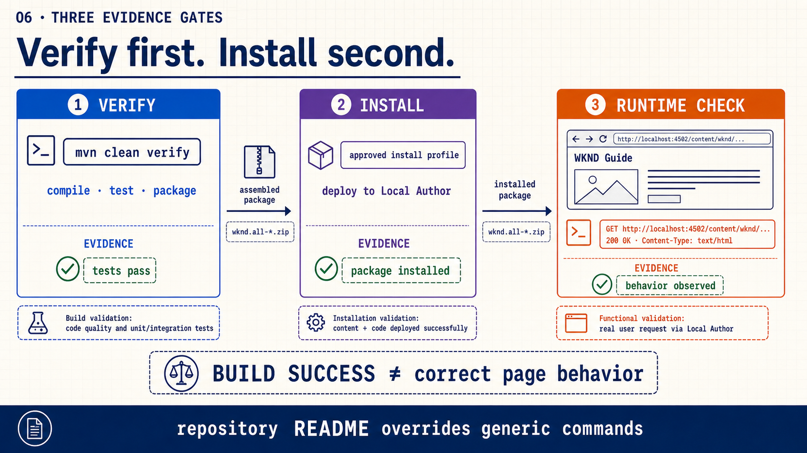
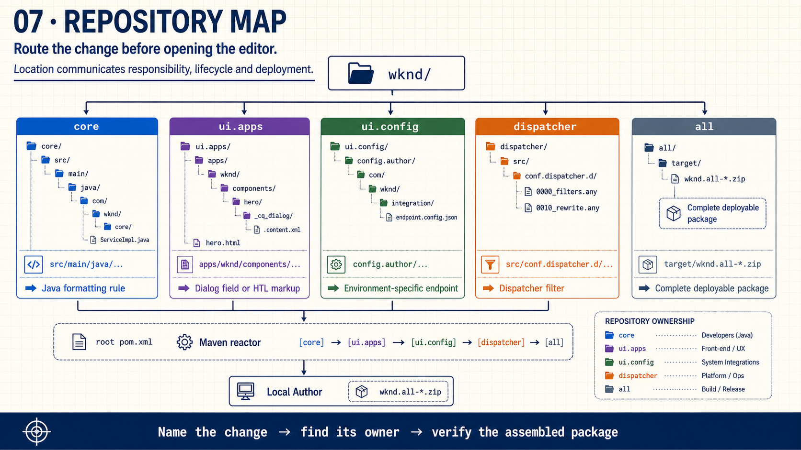
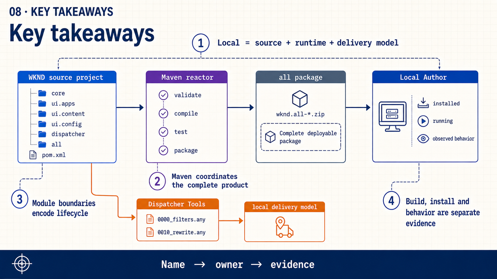
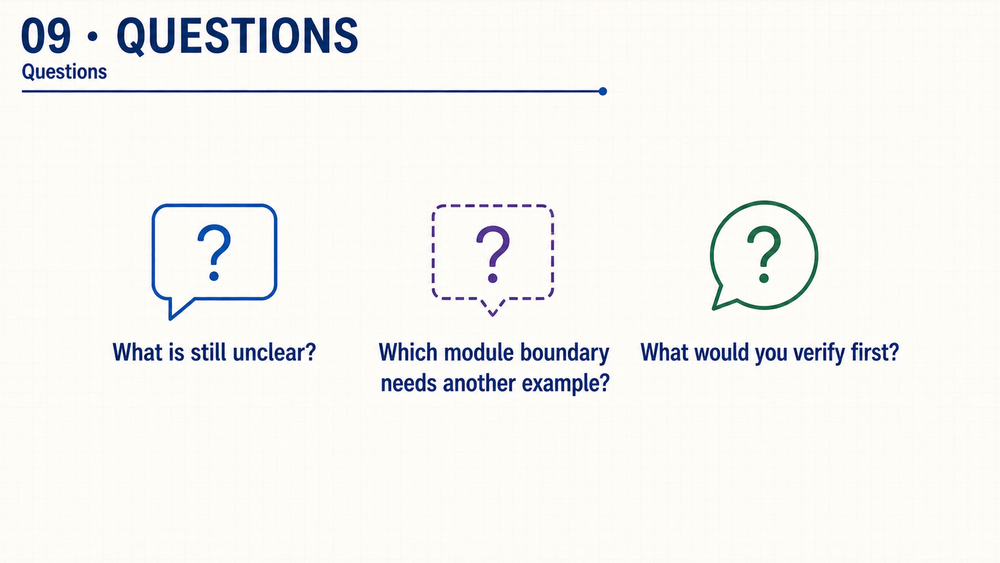

{kind=link}
Open: “Before we open an editor, what tells us where a change belongs?”
Class 2 · Week 1 · Day 2
Connect the local SDK, Maven reactor and WKND modules before editing implementation files.
pom.xml and the core, ui.apps, ui.content, ui.config, dispatcher and all modules.By the end of the session, each contributor can:
| Time | Activity | Facilitation |
|---|---|---|
| 0–3 | Retrieval | Chat prompt: “Which flow changes when a Java class changes: content or code?” |
| 3–5 | Outcome | State the routing question and define the required evidence. |
| 5–17 | Slides 1–8 | Trace the local system, build and module lifecycles. |
| 17–25 | Worked example | Read a captured WKND reactor result and locate the all package; use live output only if available. |
| 25–28 | Assignment | Route six changes and explain the acceptance criteria. |
| 28–30 | Questions | Use slide 9 only for open questions and concepts that need another example. |
Each slide is a self-contained 16:9 image. Choose Copy slide as image and paste it into PowerPoint, or download the PNG.

Open: “Before we open an editor, what tells us where a change belongs?”

Emphasize: the SDK is the runtime, not the source project; Dispatcher Tools model a separate delivery concern.

Trace: root POM → ordered module build → assembled package; one required module failure stops trustworthy completion.

Ask: “Does every component need Java?” No—add a model only when the requirement needs server-side preparation.

Emphasize: a technically valid file in the wrong module can have the wrong deployment lifecycle.

Say explicitly: BUILD SUCCESS does not prove that the package installed or the page behaves correctly.

Retrieve: let the group choose each module before revealing its route.

Key takeaways: name the change, find its owner and verify the assembled result.

Close: invite questions; do not depend on a live demo or repeat the assignment on this slide.
The complete presenter talk track is also available in speech.md.
“Today we move from the AEM delivery map into the developer's workspace. Before opening an editor, we want enough evidence to choose the module that owns the change.”
“Source is what we edit and version. The SDK runs Author. Dispatcher Tools model delivery configuration. They collaborate, but they are not interchangeable.”
“The root POM coordinates one product. A failed required module means the complete assembled result is not trustworthy.”
“A component can cross core and ui.apps, but Java is only justified when server-side preparation is required.”
“Module placement is an operational decision: it determines ownership, packaging and where the change becomes effective.”
“Build, install and runtime behavior are three different evidence gates. Passing one does not prove the next.”
“Name each change, choose its owner and then verify that the assembled package carries the result.”
“The reusable routine is: name the change, find its owner and verify the assembled result.”
“What is still unclear? Which module boundary needs another example? What would you verify first?”
pom.xml and read the module list.mvn clean verify only when it matches the README.all under its target directory.If the build cannot download dependencies, preserve the exact command and error. Use a previously captured successful reactor output to teach the flow; do not hide the environment blocker.
Individual work, 60–90 minutes. For each scenario, choose the owning module, cite one representative path and state the evidence that would prove the change reached local AEM.
core; Java source path; unit/build evidence.ui.apps; dialog and HTL paths; authored and rendered evidence.ui.content; content package path; installed repository evidence.ui.config; run-mode configuration path; runtime configuration evidence.dispatcher; filter configuration path; validated request evidence.all; target package; successful reactor and artifact evidence.Acceptance criteria: the build reports BUILD SUCCESS and at least five of six module choices are correct and justified. Installation and page behavior must be reported as separate evidence.
{kind=link}
{kind=link}
{kind=link}
{kind=link}
{kind=link}
{kind=link}
{kind=link}
{kind=link}